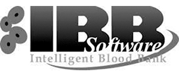

Elismart, S.A. de C.V.
Lafayette Núm. 26
Col. Nueva Anzures
Del. Miguel Hidalgo
C.P. 11590, México, Ciudad de México
(55) 5250 0927, (55) 5254 7294
(55) 5254 6654
Lada sin costo: 01800-252-6473
i_brito@elismart.com.mx
www.elismart.com.mx
www.facebook.com/pages/Elismart-IBB-Software-e-ILAB-Software/108327875855524
.png)
Somos una empresa dedicada al desarrollo de software especializado para bancos de sangre y laboratorio clínico, contamos con más de 10 años de experiencia en el mercado. Nuestro objetivo: innovar con el uso de las tecnologías de punta para darle el mejor servicio.

El sistema IBB SOFTWARE es un sistema desarrollado en México, basado siempre en la NOM vigente. De arquitectura cliente/servidor, trabajando en ambiente Windows, totalmente hecho en español y desarrollado pensando siempre en el usuario final.
La flexibilidad con la que se desarrolló el sistema permite adaptarlo al trabajo del banco de sangre para que el tiempo de aprendizaje sea menor, ya que el personal seguirá haciendo sus tareas dentro del sistema de la misma forma que lo hacen manualmente, pero con la seguridad de que siempre se trabajará dentro de la normatividad.
Además el sistema IBB software, está interfazado a todas las áreas del banco de sangre, de forma unidireccional, bidireccional o Host-Query de acuerdo con las capacidades de los instrumentos, disminuyendo al máximo el error humano al transcribir los datos.